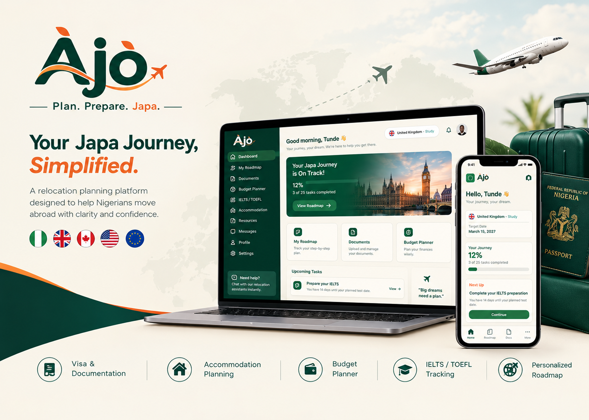

Àjò — Plan. Prepare. Japa.
Role: UI/UX Designer . Front-End Developer
Tools: Figma, HTML, CSS, JavaScript

The Problem
Relocation is exciting, but the process can be overwhelming. For many Nigerians, the dream of moving abroad is real, but the journey comes with a lot of uncertainty. Visa requirements, documents, exams, accommodation, finances, and deadlines are often spread across different platforms, making the process difficult to manage. Without a clear plan, it's easy to miss important steps, lose track of deadlines, overspend, or just feel unsure about what to do next.
The Solution
Àjò brings the essential parts of the relocation process into one simple, personalized platform — from visa documentation and budgeting to IELTS/TOEFL prep, accommodation, and departure timelines. The goal was to make the japa process feel less overwhelming by giving users a clear plan, useful tools, and a way to track their progress from preparation to departure.
Process
- Mapped the full relocation journey — from choosing a destination and purpose, to documents, exams, budgeting, and visa tracking — to understand where users get stuck
- Designed a guided onboarding flow that personalizes the experience around each user's destination, purpose, and timeline
- Wireframed core screens: dashboard, roadmap, documents, budget planner, and exam prep tracker
- Built a full design system — color palette, typography, icons, and reusable components — to keep the experience consistent across every screen
- Designed the high-fidelity UI in Figma, then developed the front end in HTML, CSS, and JavaScript
Key Decisions
- Chose to surface one priority task at a time on the dashboard, rather than showing every category at once — relocation is already stressful, and the design's job is to reduce cognitive load, not add to it.
- Used a calming, warm color palette with colorful category cards, so the app feels reassuring rather than clinical while still staying visually engaging.
- Designed the Roadmap screen around numbered steps with clear status tags (Completed / In Progress / Not Started), so users always know exactly where they stand and what to do next.
Outcome
A complete relocation-planning platform spanning onboarding, dashboard, personalized roadmap, document tracker, budget planner, exam prep, accommodation search, and profile settings — designed end-to-end in Figma and built in code, demonstrating both UI/UX design and front-end development skills on a single, cohesive product.